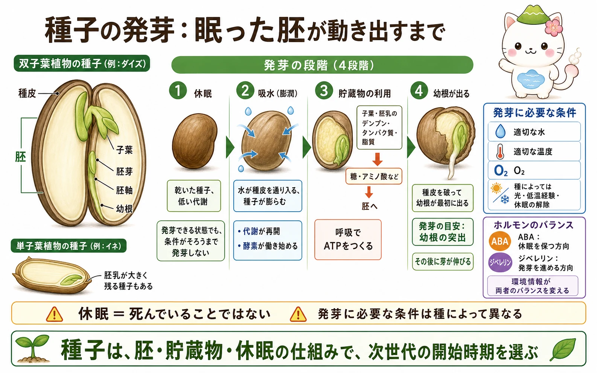
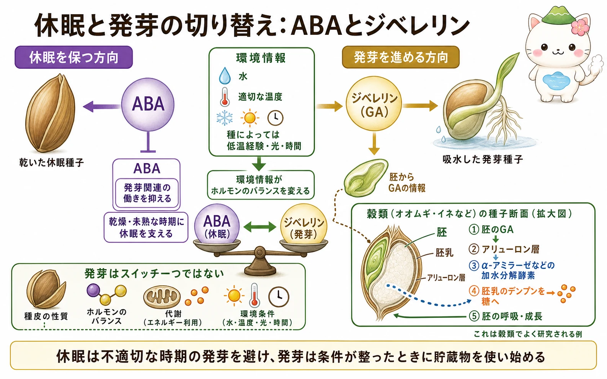

種子は何でできているか
種子の中心には、将来の植物体になる胚があります。双子葉植物の種子では、胚芽、胚軸、幼根、子葉を区別できます。種皮は乾燥や物理的な傷から胚を守ります。多くの単子葉植物では胚乳が成熟種子にも大きく残り、双子葉植物では子葉に栄養が蓄えられるものもあります。
蓄えられる主な物質は、デンプン、タンパク質、脂質です。発芽直後の胚はまだ十分に光合成できないため、これらを分解して材料とエネルギーを得ます。種子は胚を保護する容器であると同時に、最初の生長を支える非常食をもつ仕組みです。
休眠は死ではない
休眠した種子は生きていますが、発芽に適した条件が来るまで発芽しない状態です。水があっても発芽しない内的休眠と、硬い種皮や外側の条件が妨げる外的な制限を区別して考えることがあります。休眠は、秋に芽を出して冬の寒さで失われるような不利な開始を避けるために役立ちます。
休眠を解除するきっかけは種によって違います。乾燥後の時間経過、低温を経験する層積処理、温度変化、光、種皮の傷、火や煙に関わる情報などが必要な種もあります。したがって「水をやれば全ての種が発芽する」というわけではありません。
吸水から幼根の突出まで
発芽の始まりは吸水（膨潤）です。水が入ると種子は膨らみ、代謝と酵素の働きが再開します。呼吸にはO2が必要で、適した温度も反応の速さを左右します。種によっては光や低温経験も必要です。
発芽の目安としてよく使われるのは、種皮を破って幼根が突出することです。幼根が先に出ることで、水と無機イオンを吸えるようになります。その後、胚軸や胚芽が伸び、葉が光を受けられる位置へ出ていきます。


休眠中の種子は、ただ眠っているだけじゃないよ。温度や水、時間を確かめながら、次世代を始めるタイミングを待っているんだ。
貯蔵物を使って伸びる
吸水後、デンプンは糖へ、タンパク質はアミノ酸へ、脂質は脂肪酸などへ分解されます。これらは胚の細胞分裂・伸長の材料となり、細胞呼吸を通じてATPをつくります。緑の葉が十分に働き始めるまで、実生はこの貯蔵物に支えられます。
穀類では、胚からのジベレリンの情報を受けたアリューロン層が、α-アミラーゼなどの加水分解酵素をつくります。酵素が胚乳のデンプンを糖へ変え、その糖が胚の呼吸と成長に使われます。これは穀類で詳しく研究されてきた代表的な例であり、全ての種子が同じ組織構成をもつわけではありません。
ABAとジベレリンの切り替え
アブシシン酸（ABA）は、種子の成熟や乾燥の時期に休眠を保つ方向へ働きます。対してジベレリン（GA）は、条件が整った後の発芽を進める方向へ働きます。二つは単純なオン・オフではなく、合成・分解・受容・遺伝子発現を通じて互いの働き合いを変えます。
水、温度、光、低温経験などの環境情報は、このバランスだけでなく、種皮の性質や代謝状態にも影響します。発芽とは、ホルモンの量だけで決まる一つのスイッチではなく、胚が安全に生長を始められるかを複数の条件で判定する過程です。

ジベレリンは「魔法の発芽ボタン」ではないんだ。水や酸素がなく、温度も合わなければ、貯蔵物を使って育つことはできないよ。
この冊子の要点
- 種子は、胚、栄養の蓄え、種皮をもち、発芽直後の生長を支えます。
- 休眠は死ではなく、不適切な時期の発芽を避ける適応です。解除条件は種によって異なります。
- 発芽は吸水で始まり、代謝の再開と貯蔵物の利用を経て、幼根の突出として見えるようになります。
- ABAは休眠を保つ方向、ジベレリンは発芽を進める方向に働きますが、環境と他の条件を含む組み合わせが重要です。
参照資料
- OpenStax Biology 2e：Evolution of Seed Plants
- OpenStax Biology 2e：Pollination and Fertilization
- Taiz et al., Plant Physiology and Development, Oxford University Press.